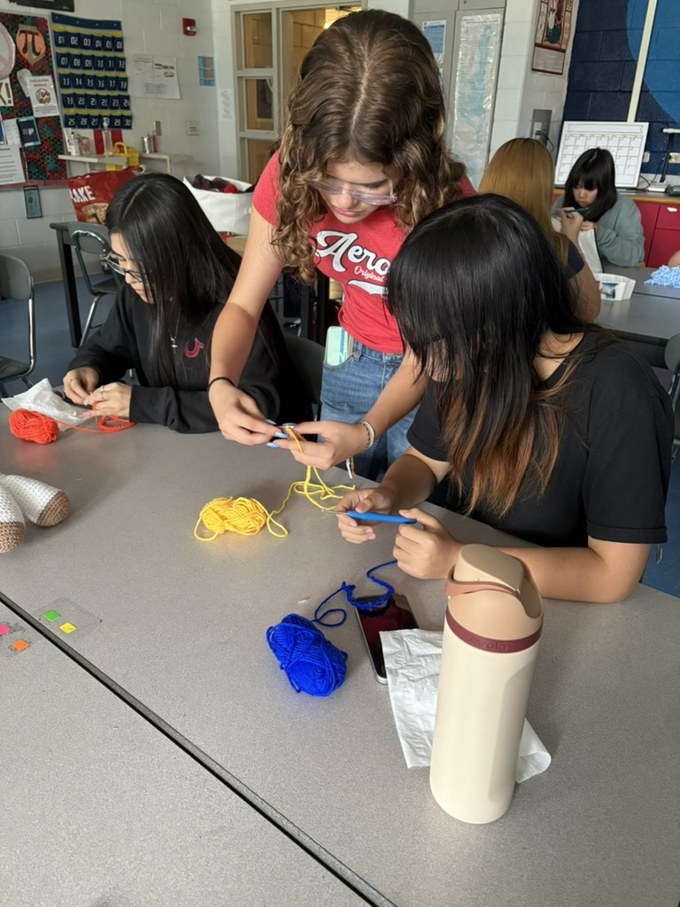
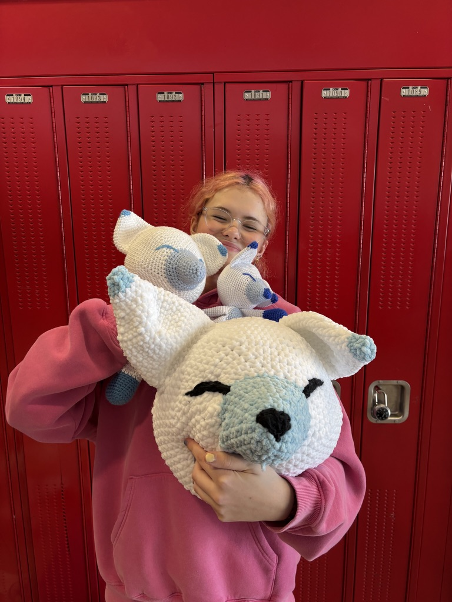

From Hooks to Hope began with something simple: a crochet hook, a ball of yarn, and a small group of students who loved creating by hand.
What started as a hobby quickly grew into a project focused on bringing comfort to pediatric hospital patients through handmade plush toys.
For the three of us — Charlotte, Vivian, and Mika — crochet started as something we did in quiet moments after school. We brought yarn to practice rooms, bus rides, and long evenings simply because we enjoyed it.
The rhythm of crochet — hook, loop, pull through, repeat — became something calming and creative in our daily lives.

During freshman year, we discovered that our school once had a crochet club, but it had quietly disappeared.
Sophomore year, we decided to bring it back.
At first, the goal was simple: rebuild a space where people could crochet together. Beginners learned their first stitches, experienced members helped untangle yarn disasters, and slowly the club became more than just a hobby group.
It became a community.

During the winter of our junior year, we organized our first plushie donation drive.
By the end of the drive, our members had created 33 handmade plush animals, each one unique and carefully crafted.
We partnered with Ann & Robert H. Lurie Children’s Hospital of Chicago to deliver the donation.

During the hospital visit, we met several young patients. Hospitals can be overwhelming places for children.
One of the youngest children in the room received a small plush winter fox.
The moment he held it, his entire expression changed. His eyes lit up instantly.
It was just yarn and stuffing — a few hours of work — but in that moment, it meant something much bigger.
That moment became the heart of From Hooks to Hope.

What began with three students and a crochet hook is becoming something much larger.
We are currently working to establish From Hooks to Hope as a nonprofit organization, allowing us to expand our partnerships, support volunteers, and grow our impact.
Our goal is to build a network where crocheters of all skill levels can contribute — from beginners learning their first stitches to experienced makers creating detailed plush toys.

At its core, the mission remains simple.
A crochet hook. A ball of yarn. Someone willing to spend time creating something for a child they may never meet.
Whether From Hooks to Hope reaches one hospital or many, our goal is always the same: to create moments of comfort, joy, and connection for children facing difficult experiences.

From Hooks to Hope is just getting started.
With the support of volunteers, donors, and partner hospitals, we hope to continue expanding our reach and bringing handmade comfort to children in hospitals across the country.